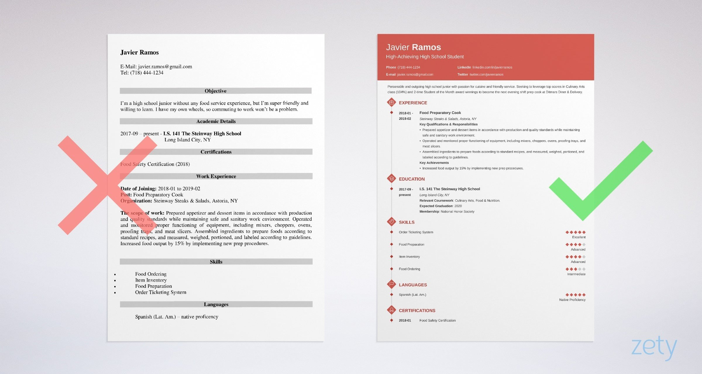

Finding What You're Interested In
I know what it feels like to have no idea what it is that you want to do in the future.
To have friends and family always ask you "So what are you doing in college?" or "What are
you interested in?" The truth is, you're not alone. If you're not sure yet what it is that
you want to do in college / the future, that's ok. I'm here to help a little bit.
To begin, I recommending taking this quiz
Next, I believe it is much easier to get rid of majors / subjects that you are most definitely
NOT interested in. Here is a list of majors that may or may not interest you. Once you click on
one, it will go more in depth until you find which one you seem most interested in. And remember,
it doesn't matter if you still can't narrow in on exactly one, if anything, it's great that
you are interested in many things! Just try to mentally cross off ones that you are sure you
do not want to pursue to narrow it down, but if there is a particular topic that calls out to you,
then go further in depth!
College Majors List:
Agriculture & Natural Resources Conservation
- Agriculture, General
- Agribusiness Operations
- Agricultural Business & Management
- Agricultural Economics
- Agricultural Production
- Agronomy & Crop Science
- Animal Sciences
- Food Sciences & Technology
- Horticulture Operations & Management
- Horticulture Science
- Natural Resources Conservation, General
- Environmental Science
- Forestry
- Natural Resources Management
- Wildlife & Wildlands Management
Architecture
- Architecture, General
- Architectural Environmental Design
- City/Urban/Regional Planning
- Interior Architecture
- Landscape Architecture
Area, Ethnic, & Multidisciplinary Studies
- Area Studies, General (e.g., African, Middle Eastern)
- Asian Area Studies
- European Area Studies
- Latin American Area Studies
- North American Area Studies
- Ethnic & Minority Studies, General
- African American Studies
- American Indian/Native American Studies
- Latino/Chicano Studies
- Women’s Studies
- Liberal Arts & General Studies
- Library Science
- Multi/Interdisciplinary Studies
Arts: Visual & Performing
- Art, General
- Art History, Criticism & Conservation
- Fine/Studio Arts
- Cinema/Film
- Cinematography/Film/Video Production
- Dance
- Design & Visual Communications, General
- Fashion/Apparel Design
- Graphic Design
- Industrial Design
- Interior Design
- Music, General
- Music, Performance
- Music, Theory & Composition
- Photography
- Theatre Arts/Drama
Business
- Accounting
- Accounting Technician
- Business Administration & Management, General
- Hotel/Motel Management
- Human Resources Development/Training
- Human Resources Management
- International Business Management
- Labor/Industrial Relations
- Logistics & Materials Management
- Marketing Management & Research
- Office Supervision & Management
- Operations Management & Supervision
- Organizational Behavior
- Purchasing/Procurement/Contracts Management
- Restaurant/Food Services Management
- Small Business Management/Operations
- Travel/Tourism Management
- Business/Management Quantitative Methods, General
- Actuarial Science
- Business/Managerial Economics
- Finance, General
- Banking & Financial Support Services
- Financial Planning & Services
- Insurance & Risk Management
- Investments & Securities
- Management Information Systems
- Real Estate
- Sales, Merchandising, & Marketing, General
- Fashion Merchandising
- Tourism & Travel Marketing
- Secretarial Studies & Office Administration
Communications
- Communications, General
- Advertising
- Digital Communications/Media
- Journalism, Broadcast
- Journalism, Print
- Mass Communications
- Public Relations & Organizational Communication
- Radio & Television Broadcasting
- Communications Technology, General
- Graphic & Printing Equipment Operation
- Multimedia/Animation/Special Effects
- Radio & Television Broadcasting Technology
Community, Family, & Personal Services
- Family & Consumer Sciences, General
- Adult Development & Aging/Gerontology
- Child Care Services Management
- Child Development
- Consumer & Family Economics
- Food & Nutrition
- Textile & Apparel
- Parks, Recreation, & Leisure, General
- Exercise Science/Physiology/Kinesiology
- Health & Physical Education/Fitness
- Parks/Rec/Leisure Facilities Management
- Sport & Fitness Administration/Management
- Personal Services, General
- Cosmetology/Hairstyling
- Culinary Arts/Chef Training
- Funeral Services & Mortuary Science
- Protective Services, General
- Corrections
- Criminal Justice
- Fire Protection & Safety Technology
- Law Enforcement
- Military Technologies
- Public Administration & Services, General
- Community Organization & Advocacy
- Public Administration
- Public Affairs & Public Policy Analysis
- Social Work
Computer Science & Mathematics
- Computer & Information Sciences, General
- Computer Networking/Telecommunications
- Computer Science & Programming
- Computer Software & Media Applications
- Computer System Administration
- Data Management Technology
- Information Science
- Webpage Design
- Mathematics, General
- Applied Mathematics
- Statistics
Education
- Counseling & Student Services
- Educational Administration
- Special Education
- Teacher Education, General
- Curriculum & Instruction
- Early Childhood Education
- Elementary Education
- Junior High/Middle School Education
- Postsecondary Education
- Secondary Education
- Teacher Assisting/Aide Education
- Teacher Education, Subject-Specific
- Agricultural Education
- Art Education
- Business Education
- Career & Technical Education
- English-as-a-Second-Language Education
- English/Language Arts Education
- Foreign Languages Education
- Health Education
- Mathematics Education
- Music Education
- Physical Education & Coaching
- Science Education
- Social Studies/Sciences Education
Engineering
- Engineering (Pre-Engineering), General
- Aerospace/Aeronautical Engineering
- Agricultural/Bioengineering
- Architectural Engineering
- Biomedical Engineering
- Chemical Engineering
- Civil Engineering
- Computer Engineering
- Construction Engineering/Management
- Electrical, Electronics & Communications Engineering
- Environmental Health Engineering
- Industrial Engineering
- Mechanical Engineering
- Nuclear Engineering
Engineering Technology & Drafting
- Drafting/CAD Technology, General
- Architectural Drafting/CAD Technology
- Mechanical Drafting/CAD Technology
- Engineering Technology, General
- Aeronautical/Aerospace Engineering Technologies
- Architectural Engineering Technology
- Automotive Engineering Technology
- Civil Engineering Technology
- Computer Engineering Technology
- Construction/Building Technology
- Electrical, Electronics Engineering Technologies
- Electromechanical/Biomedical Engineering Technologies
- Environmental Control Technologies
- Industrial Production Technologies
- Mechanical Engineering Technology
- Quality Control & Safety Technologies
- Surveying Technology
English & Foreign Languages
- English Language & Literature, General
- American/English Literature
- Creative Writing
- Public Speaking
- Foreign Languages/Literatures, General
- Asian Languages & Literatures
- Classical/Ancient Languages & Literatures
- Comparative Literature
- French Language & Literature
- German Language & Literature
- Linguistics
- Middle Eastern Languages & Literatures
- Spanish Language & Literature
Health Administration & Assisting
- Health Services Administration,General
- Hospital/Facilities Administration
- Medical Office/Secretarial
- Medical Records
- Medical/Clinical Assisting, General
- Dental Assisting
- Medical Assisting
- Occupational Therapy Assisting
- Physical Therapy Assisting
- Veterinarian Assisting/Technology
Health Sciences & Technologies
- Chiropractic (Pre-Chiropractic)
- Dental Hygiene
- Dentistry (Pre-Dentistry)
- Emergency Medical Technology
- Health-Related Professions & Services, General
- Athletic Training
- Communication Disorder Services (e.g., Speech Pathology)
- Public Health
- Health/Medical Technology, General
- Medical Laboratory Technology
- Medical Radiologic Technology
- Nuclear Medicine Technology
- Respiratory Therapy Technology
- Surgical Technology
- Medicine (Pre-Medicine)
- Nursing, Practical/Vocational (LPN)
- Nursing, Registered (BS/RN)
- Optometry (Pre-Optometry)
- Osteopathic Medicine
- Pharmacy (Pre-Pharmacy)
- Physician Assisting
- Therapy & Rehabilitation, General
- Alcohol/Drug Abuse Counseling
- Massage Therapy
- Mental Health Counseling
- Occupational Therapy
- Physical Therapy (Pre-Physical Therapy)
- Psychiatric/Mental Health Technician
- Rehabilitation Therapy
- Vocational Rehabilitation Counseling
- Veterinary Medicine (Pre-Veterinarian)
Philosophy, Religion, & Theology
- Philosophy
- Religion
- Theology, General
- Bible/Biblical Studies
- Divinity/Ministry
- Religious Education
Repair, Production, & Construction
- Aviation & Airway Science, General
- Aircraft Piloting & Navigation
- Aviation Management & Operations
- Construction Trades (e.g., carpentry, plumbing, electrical)
- Mechanics & Repairers, General
- Aircraft Mechanics/Technology
- Autobody Repair/Technology
- Automotive Mechanics/Technology
- Avionics Technology
- Diesel Mechanics/Technology
- Electrical/Electronics Equip Installation & Repair
- Heating/Air Cond/Refrig Install/Repair
- Precision Production Trades, General
- Machine Tool Technology
- Welding Technology
- Transportation & Materials Moving (e.g., air, ground, & marine)
Sciences: Biological & Physical
- Biology, General
- Biochemistry & Biophysics
- Cell/Cellular Biology
- Ecology
- Genetics
- Marine/Aquatic Biology
- Microbiology & Immunology
- Zoology
- Physical Sciences, General
- Astronomy
- Atmospheric Sciences & Meteorology
- Chemistry
- Geological & Earth Sciences
- Physics
Social Sciences & Law
- Legal Studies, General
- Court Reporting
- Law (Pre-Law)
- Legal Administrative Assisting/Secretarial
- Paralegal/Legal Assistant
- Social Sciences, General
- Anthropology
- Criminology
- Economics
- Geography
- History
- International Relations & Affairs
- Political Science & Government
- Psychology, Clinical & Counseling
- Psychology, General
- Sociology
- Urban Studies/Urban Affairs
Programs/Interships & Camps for High Schoolers
In this section, you will be able to find summer programs, internships,
and scholarships for high schoolers. Doing these types of programs and
applying for scholarships are extremely important when applying to
colleges and can be game-changers for you.
Programs/Summer Programs/Internships/Camps
Educational summer programs/camps are amazing opportunities for
high schoolers and not only do they look great on applications, but
they can also be super fun and a great way to meet new people. Here
are some fantastic educational programs sectioned into the subject.
Service/Leadership/Government Programs
Bank of America Student Leaders Summer Camp
-
The Student Leaders Summit focuses on skill building and
creating a more civically engaged society.
- 2021 Application will open in November 2020, so don't
forget to apply!
- Set in Washington, D.C.
- For more information, Click Here
Boys/Girls State*
-
Intensive one-week program where students divide into parties,
elect officials, and work to write, propose, and pass bills.
- Set in Washington, D.C. and is completely free
-
Eligibility Rules: Be a legal inhabitant of the United States,
have an interest in government or current events, have high moral
character, show strong leadership abilities, demonstrate above-average
scholastic achievement.
-
Also research Boys/Girls Nation it is another prestigious program similar
to Boys/Girls State.
- For more information on GIRLS STATE, Click Here
- For more information on BOYS STATE, Click Here
Telluride Association Summer Program (TASP)*
- Six-week program for rising seniors, the program is completely free!
- Over 1,500 applicants for 60 positions.
-
For summer 2021, Cornell University and the University of Michigan will host a total of four TASP seminars from
late June to early August.
- Applications for 2021 will be available in the fall.
- For more informaton, Click Here
STEM Programs
Boston University - Research in Science & Engineering (RISE)*
-
Eligibility rules: Must be a rising high school senior and a US citizen
or permanent resident. You will need two recommendations and submit
your high school transcript, test scores, and essays.
-
Application deadline - unsure but sometime mid February, so check
it out before hand and apply!
- For more information, Click Here
High School Honors Science, Mathematics, Engineering, Program (HSHSP)*
- Seven-week residential program at Michigan State University
- For rising high school seniors
- For more information, Click Here
Kode With Klossy
- Two-week (10 days only on weekdays) coding camp for girls aged 13-18
- Create an app or build a website, meet amazing new people, and learn to code!
-
I personally did this camp for the summer 2020 and although it was virtual (over zoom)
I had SO much fun. I highly recommend it, because the community is so supportive and full of
love and I was in the mobile app development section and learned a lot. I created an app with
a group of girls who turned into close friends even after only knowing them for ten days and online.
- Normally is based in New York, and completely free!
- For more information, Click Here
MIT - Minority Introduction to Science and Engineering (MITES)*
- Eligibility rules: Must be a rising high school senior
-
A six-week science and engineering program at MIT (in Cambridge
Massachusetts)
- For summer 2021, applications open in November 2020!
- For more info, Click Here
Program in Mathematics for Young Students (PROMYS)*
-
Six-week summer program enrolling 80 carefully chosen mathematically
gifted high school students
- Set in Boston University in Boston Massachusetts
- For more information, Click Here
Research Science Institute (RSI)*
-
Five-week summer program at the Massachusetts Institute of Techonology
(MIT) in Cambridge, Massachusetts. Completely free!
- For more information, Click Here
Science Internship Program (SIP)*
- 10-week internships at the University of California-Santa Cruz
-
Ideal for rising juniors, 150 students are accepted and given the rare
chance to work and learn at an elite research institution.
- For more information, Click Here
Stanford University Mathematics Camp (SUMaC)*
- Residential four-week program at Stanford University in Stanford, California.
- For current 10th - 11th grade students
-
Application deadline for 2020, March 11 (so start researching
around that time for 2021 to apply)
- For more information, Click Here
Summer Academy for Math and Science (SAMS)*
-
Six-week residential program at Carnegie Mellon University for rising
juniors and seniors who are interested in science and engineering or
computer science.
-
To apply you must submit an online application including: your unofficial
high school transcript, standardized test scores, one counselor recommendation,
one teacher recommendation (teacher must be in a STEM field), and essay responses
- For more information, Click Here
The Summer Science Program (SSP)*
- 39-day program where rising seniors conduct research projects, take field
trips, listen to guest speakers, and take part in a life-changing experience.
- For more information, Click Here
Journalism/Writing Programs
JCamp*
- 6-days of intense journalism training. Completely free!
- For high school freshmen, sophomores, and juniors
- For more information, Click Here
Emerson College Creative Writers Workshop
- Five-week program for rising high school sophomores, juniors, and
seniors who are interested in developing their writing skills through media,
including fiction, poetry, screenwriting, graphic novels, and magazine writing.
- For more information, Click Here
College Prep Programs
Hispanic College Institute at Virginia Tech
-
3-day free program where Latinx students can learn about college and
the application process as well as learn from Latinx experts in all kinds
of fields.
- I am doing this program in the summer, so I will come back and share my experience!
- Registration for summer 2021 should open in early spring
- For more information, Click Here
Summer College Immersion
- Three-week college prep program designed for high-achieving rising high school
seniors at Georgetown University. The program is completely free!
- Application Deadline last year was on February 18, 2019 so be on the lookout this year!
- For more information, Click Here
Scholarships for High Schoolers
If you are in high school, now is the time to apply for scholarships. College is super expensive, so any kind of
scholarship, whether it is big or small, helps. More local scholarships usually grant less money but are also much
less competitive than national scholarships. Since there are countless scholarships of all types for all different
types of students in different areas, I will put links to amazing websites with scholarships that could be perfect
for you. Some of these websites may ask you to create an account.
Benefitial and Productive Things To Do
As a high school student, it is important to recognize that we have to do something big and impactful to really stand
out to college admissions people. Not only that, but also do it for yourself too. Doing an educational yet fun project
is a great opportunity to learn something new and explore new subjects in the area that you are interested in. There are
so many things to do right now, especially during quarantine, so I will give you a few ideas!
- Start a Youtube Channel
- Start a Small Business
- Continue Your Club Meetings Virtually
- Write and Self-Publish a Book
- Learn a Programming/Coding Language
- Learn a New Speaking Language
- Start an Online Discussion/Book Club
- Create a Website or an App
- Teach Yourself Adobe Creative Cloud
- Start a Blog
- Learn an Instrument
- Start an Online Fundraiser
- Create Marketing Materials for Non-Profit Organizations
- Volunteer Virtually
- Start a Podcast
- Find a Free Online Course in Something That Interests You and Commit To It!
- Start a Workout Program
- Begin Looking for and Applying to Scholarships and Programs
- Start a Virtual Run for Charity
- Create your High School Resume if you don't have one or update it if you do!
- Create a Spreadsheet of the Colleges You Want to Apply To
- Create a Spreadsheet of Your High School Stats (more info about this in the More Tips for College section)
What to Include in Your High School Resume
It's always a good idea to have a resume, no matter if you are a freshmen or a senior. You never know when a
good opportunity will come along and you're going to need your resume. You want to be prepared with a good and
up to date resume. Here I will provide some tips to how to have a good resume, what to include, and what people
are looking for when they read your resume. Remember, job recruiters usually read an average
of only 6 seconds per resume, since they have so many. So you want to make yours stand out. Here's how:
First things first, you should emphasize your education. Make sure to include:
- Where you go to high school and when you graduate (i.e June 2022)
- What your GPA is (clarify if you put it unweighted or weighted)
- Your SAT/ACT scores (only include if they're impressive and/or you have already taken it)
- If you're on the Honor Roll (did you get first honors all of your sophomore year? Put that in there!)
-
List any relevant coursework you might be taking
-
Any other relevent academic achievements (Did you win a competition in the field the job is centered in? Did
your school grant you an award?)
Then, put your work experience. Tell the job recruitors about any job, anything that you've ever gotten
paid for. Some examples include but are not limited to: lawn work, babysitting, tutoring, if you actually have a job,
that's great put that on there. This can also include community service hours, especially if you have a significant amount of hours,
that can be impressive. If you have neither, emphasize the extracurriculars you participate in, including
clubs, sports, and other organizations.
Third, highlight your leadership experience. Leadership is a key word in many resumes and having a lot of leadership experience
is important in resumes. This can include any community work that your doing, clubs that you're president of, teams that
you're captain of, and if you're involved in student council, that is a sign of leadership.
The other section includes any skills that you have. Here you include both hard and soft skills. Hard skills are abilities specific
to the job and based on experience and are learned, while soft skills are rooted in your personality and is not taught.
Some examples of hard skills are:
- Photoshop
- Digital Design
- Proficiency in Excel, Powerpoint, and Word
- iMovie
- Knowing a coding language
- Being fluent in another speaking language
- CPR Certified
And examples of soft skills may include:
- Problem-Solving
- Communication
- Teamwork
- Creativity
- Work Ethic
- Time Management
- Adaptability
Always start with and action verb, and quantify when possible. Numbers are what stand out in a resume full of words, so if you
have impressive numbers for anything, use them! These numbers can include how many people that you worked with or managed, how
much money that you raised, how many hours of community service or hours of work that you put into a project. Also, under each
item on your resume have no more than five bullet points or it will be too lengthy. Lastly, proofread your resume multiple times
before submitting it to an employer.
Reading resume samples is a great way for you to get an idea of what a good resume looks like. Also using templates can help organize
the information on your resume and help it look much nicer. Your resume should not be longer than one page, so if there is a template where
you feel as though you cannot fit all that you want to say on it, use a different one. Use a template that adjusts for you, don't adjust to the
template.

This is a resume that uses a template to make it look much cleaner and more appealing to the eye, which is exactly what you want.
While the first example is ok, it does not stand out and is heavy to read. Using a modern and sleek template is important. For beautiful
templates click here! Highly recommend using this website!
Extra Tips and Tricks!
Now that we have gone over most important academic necessities, here are some random tips for beginning college! Personally I am not in college yet, so it
may seem weird that I am the one giving the tips, but trust me these are good.
While in High School Tips
-
You're going to want to start writing your college essays the summer before senior year because you are most likely going to be super busy during the
year and will not have enough time to write a great essay.
-
Make a list for college. This is in excel or spreadsheets and research colleges that you are interested in. You should have reach, high target, target,
low target, and safety schools on that list. Here is what you should write in the columns of your spreadsheet:
- School Name
-
List the platform you are going to use to apply (i.e. QuestBridge, Common App, Coalition, etc.) and if you're not
sure yet, don't include it! This can be added in later as well.
- Location - include city and state, or country
- Financial aids! Some colleges don't provide out-of-state aids so make sure to do your research and find out if the ones you are interested in do
- Acceptance rate - this should be a percentage
-
Tuition - Include how much money you have to pay per year. This doesn't include books or anything else, but you can make a seperate column for that
if you would like.
- Lastly, include the college's graduation rate
-
When writing an essay for college, make it specific to what you want, whether it is a program your interested in, research with a specific professor, anything so they
know why you really want to go to their school.
-
(For the essay) Do NOT write about a sports injury, volunteer opportunity, anything that is way overrused. Instead talk about any experience where
you learned from it and show growth and character.
-
When writing your essay, start with putting the reader in the story, DON'T restate the prompt. As your telling your story, use a lot of details that show, don't tell
the point that you're trying to make. Then at some point you're going to want to deviate from the story and start talking about the lessons you learned from it, or your
takeaway from the experience. Here you want to start talking about the traits of your thesis and how they define who you are and how it will continue to define you in
the future.
- Make a document with everything that you've written for college. This can be used to reuse parts of old essays.
- Apply to a bunch of local scholarships, even if they are not that much money, applying to many and winning them will add up!
-
This one is probably more well known, but if you are a high school student who is taking or will take AP courses, CollegeBoard has
videos for every single AP course. They are free online resources for students and I highly recommend watching them/taking notes to get
ahead in school.